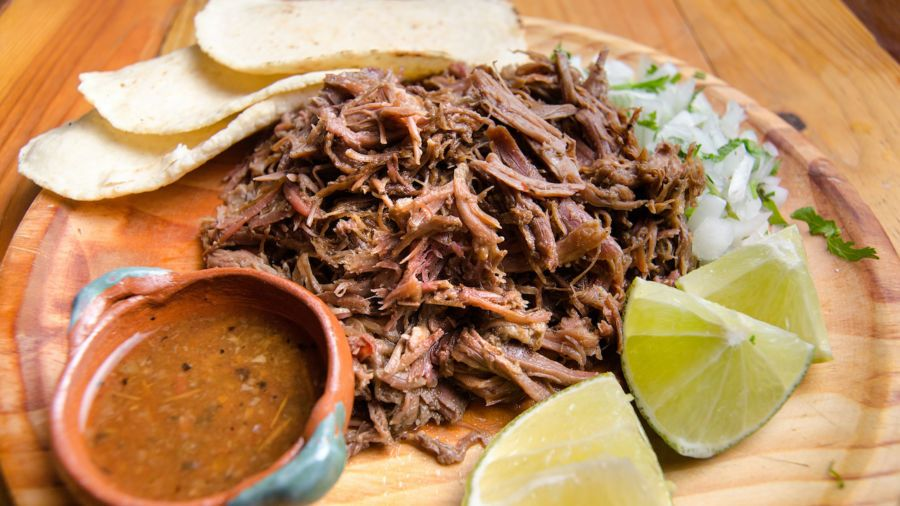

Receta de Barbacoa

Barbacoa de Res, lengua y cachete
Esto es barbacoa de res, hecha con lengua y cachete, es suave, se deshace muy facilmente y es mejor degustada con pan o tortillas de maíz.
Ingredientes
- Lengua de Res
- Cachete de Res
- Chile Chilaca
- Una Cebolla Grande
- Tres dientes de ajo
- Sal y pimienta al gusto
Pasos
- Lavar la carne
- Cortar la lengua en rodajas de 2 pulgadas máximo
- Cortar el cachete en cubos de 4-5 cms
- Lavar las verduras
- Agregar la carne a una olla lenta
- Cortar la cebolla a la mitad y agregarla
- Agregar el chile chilaca completo y los dientes de ajo
- Agregar sal y pimienta